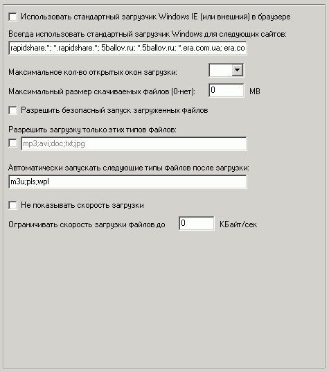

Наиболее важные опции на этой вкладке:
Использовать стандартный менеджер загрузки Windows IE (или внешний) в браузере
При включении файлы будут загружаться обычным менеджером Internet Explorer (или внешним - ReGet, DownloadMaster, FlashGet и пр.), а не встроенным в Runpad Shell. Использование этой опции не рекомендуется, т.к. основные настройки ограничений на этой странице не будут иметь силы.
Однако шелл делает работу менеджера Windows полностью безопасной.
Всегда использовать стандартный загрузчик Windows для следующих сайтов
Необходимо указать через точку с запятой список "проблемных" сайтов, с которых встроенный загрузчик Runpad Shell некорректно загружает файлы. Как правило, это некоторые "защищенные" от открытой загрузки сайты.
В этом случае для таких сайтов будет всегда использоваться стандартный загрузчик Windows
Также рекомендуется указывать маски, например: *.rapidshare.* и rapidshare.*, а не просто rapidshare.com
Разрешить безопасный запуск загруженных файлов
Возможность запуска файла без его сохранения при скачивании. Будут разрешены для запуска только те типы файлов, которые установлены на вкладке "Безопасность: Файлы" - по аналогии с запуском из проводника пользователя.